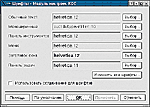
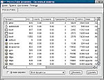

Постинсталляционная настройка LinuxДенис Колисниченко,
14.05.2003, ITC
Online
Ничто в мире не идеально, и программы установки Linux -- не
исключение. Одни забывают настроить средство автоматического
монтирования дисков, другие -- прописать корректную кодировку
для отображения имен файлов на Windows-разделах, третьи не
дружат с кириллицей. В этой статье мы постараемся рассмотреть
наиболее типичные из таких ситуаций. Информация в основном
ориентирована на начинающего пользователя свободной ОС и
призвана помочь ему как можно более быстро адаптироваться в
непривычном мире Linux.
Автоматическое
монтирование
Монтирование -- это подключение
какого-нибудь тома винчестера к корневой файловой системе.
Например, раздел /dev/hda1 можно "примонтировать" к каталогу
/mnt/c корневой файловой системы и в дальнейшем именно
посредством него обращаться к нужным файлам. Делается это с
помощью следующей команды:
mount -t fs_type device
mount_point |
Параметр
fs_type (который должен следовать за -t)
задает тип файловой системы, например: ext2 -- основная
файловая система Linux, ext3 -- ее более новая версия (с
журналированием), iso9660 -- для CD-ROM, vfat и ntfs -- для
FAT16/32 и NTFS соответственно. Встречаются и другие варианты.
NTFS может не поддерживаться по умолчанию (это проверяется в
файле /proc/filesystems или /etc/filesystems), в таком случае,
вероятно, придется перекомпилировать ядро, включив ее
поддержку. При наличии драйвера в виде модуля может оказаться
достаточно команды наподобие modprobe
ntfs.
Следующий параметр (device)
указывает монтируемый том в стандартном синтаксисе Linux,
соответственно, /dev/hda1 -- первый раздел первого жесткого
диска (Primary Master) и т. д. Последний -- собственно точка
монтирования, т. е. самый обыкновенный каталог, который к
этому моменту уже должен существовать.
Таким
образом, типичная команда mount может выглядеть
следующим образом:
#mount --t vfat /dev/hda1
/mnt/c |
Для отключения
раздела используется команда:
Сведения о
подключенных файловых системах хранятся в файле /etc/mtab, а
информация об автоматическом монтировании -- в /etc/fstab.
Формат записей в нем такой:
device mount_point fs_type options backup_flag
check_flag |
Здесь
options -- список опций, описанных в справочной
системе (man fstab); backup_flag -- указывает
программе резервного копирования dump на необходимость
включения данной файловой системы в архив;
check_flag -- управляет проверкой тома при
инициализации системы (выполняется программой fsck).
Нередко при монтировании "в лоб" файловых систем
Windows вместо русских букв отображается не совсем то, что вам
бы хотелось. Например, вместо имени каталога Мои
документы можно увидеть нечто вроде ??? ?????????. Для
раскодирования имен файлов используются опции монтирования
iocharset и codepage. В данном случае:
codepage=866,
iocharset=koi8-r |
Результирующий
фрагмент файла fstab может выглядеть таким образом:
/dev/hda1 /mnt/c vfat noexec,
codepage=866, iocharset=koi8-r 0 0
|
Отключение лишних
сервисов
|
|
Мастер установки шрифтов (команда kcmshell
kcmfontinst)
| Вам кажется, что
свежеустановленная ОС слишком медленно загружается? В чем же
причина? Вероятно, в том, что в системе присутствует чересчур
много ненужных сервисов (демонов). К сожалению,
инсталляционная программа не в состоянии предвосхитить
пожелания пользователя, поэтому активизирует все, что ей
кажется полезным. А выбор компонентов вручную обычно
предоставляется только в режиме "Эксперт", не рекомендуемом
для начинающих.
Давайте разбираться. Операционная
система Linux имеет несколько уровней запуска. Как правило,
ваша система загружается на третьем (многопользовательский
режим с поддержкой сети) или на пятом (многопользовательский
режим с поддержкой сети и автоматическим запуском системы X
Window). Уровень 6 используется для перезагрузки. Сценарии для
запуска демонов находятся в каталоге /etc/rc.d/init.d (на
который также указывает ссылка /etc/init.d). Для того чтобы
остановить нужный вам сервис, введите команду:
/etc/init.d/<сервис>
stop |

|
Выбор шрифта (команда kcmshell fonts)
|

|
Текущие процессы (команда
ksysguard)
| В каталогах
/etc/rc.d/rcN.d (где N -- это уровень запуска) содержатся
ссылки на скрипты, которые автоматически запускаются на данном
уровне, -- так называемые initscripts соответствующих
сервисов.
Для редактирования уровней запуска я
рекомендую использовать программу ksysv, которая входит в
состав среды KDE (или консольную ntsysv). Она позволяет
указать не только, какие сервисы нужно запускать на том или
ином уровне, но и в каком порядке.
Существует также
много других подобных программ, например drakxservices,
которая, в отличие от ksysv, позволяет редактировать лишь
текущий уровень запуска. Перейти на другой можно с помощью
команды init N, а уровень по умолчанию определяется в
файле /etc/inittab.
Казалось бы, все просто: отключаешь
лишние сервисы, и система работает быстрее. А что можно-то
отключить? Судя по информации, которую предоставляет, к
примеру, программа drakxservices, все сервисы крайне нужны и
незаменимы. Первичную информацию можно получить в таблице 1,
остальное -- по мере приобретения
квалификации.
Производительность жесткого
диска
Теперь ваша система запускается заметно
быстрее, но почему файлы открываются так медленно? Даже запуск
простенькой программки kwrite заставляет довольно долго ждать,
а за время инициализации знаменитого Mozilla можно успеть
выпить чашку кофе (если он не слишком горячий)...
Оказывается, во многих
дистрибутивах отключаются наиболее "продвинутые" функции
вашего винчестера. Особенно это касается немного устаревших
версий Red Hat (до 7.3) и Mandrake (до версии 8.0). Это
значит, что ваш ATA100-диск будет читать информацию со
скоростью не более чем 3,7 MBps. Запустите программу hdparm в
режиме теста:
# hdparm -t /dev/hda
Timing buffered disk
reads: 64 MB in 17.08 seconds = 3.75
MB/sec |
Маловато? Хотите
получить полный список отключенных функций (с DMA и так уже
все ясно)?
# hdparm /dev/hda
/dev/hda:
multcount =
0 (off)
I/O support = 0 (default 16-bit)
unmaskirq
= 0 (off)
using_dma = 0 (off)
keepsettings = 0
(off)
nowerr = 0 (off)
readonly = 0
(off)
readahead = 8
(on) |
Вот теперь можно
вводить команду man hdparm, разбираться с параметрами
этой полезной (но и опасной) программы и предельно
аккуратно "разгонять" винчестер. Для моего оптимальными
оказались следующие настройки:
# hdparm -d1m8c3u1
/dev/hda |
Здесь параметр
d включает DMA, c -- 32-битный доступ к диску, с
помощью m я разрешил передавать более одного слова за
такт (в данном случае -- 8), а u быстро избавит xmms от
"заикания", если таковое появится. Параметры X34, X68 и X69
включают режимы ATA33/66/100 соответственно, например:
Для сохранения
конфигурации контроллера IDE используйте команду:
При перезагрузке
настройки IDE сбрасываются, поэтому команду "разгона"
винчестера нужно поместить в сценарий запуска системы
(например, /etc/rc.d/rc.local).
Кстати, программа
hdparm способна не только повысить производительность
накопителя, но и принудительно снизить ее, что особенно
актуально для современных приводов CD-ROM (к сожалению, далеко
не все из них поддерживают эту возможность). К примеру,
следующая команда установит скорость 10Х (около 1500
KBps):
Подключение
кириллицы
В некоторых дистрибутивах проблемы со
шрифтами X Window бросаются в глаза уже при регистрации в
системе. Это значит, что, скорее всего, не были установлены
или корректно прописаны кириллические шрифты. Чтобы исправить
ситуацию, в большинстве случаев нужно всего лишь добавить в
конфигурационный файл /etc/X11/fs/config строку:
/usr/X11R6/lib/X11/fonts/cyrillic |
или
/usr/X11R6/lib/X11/fonts/KOI8/75dpi |
Какую
именно -- зависит от каталога, в который установлены
соответствующие шрифты. Для Red Hat и Mandrake подходит первый
вариант. В дистрибутиве ALT Linux кириллические шрифты
находятся в пакетах XFree86-cyr_rfx_fonts_koi8 и val-ttf и
устанавливаются в каталоги:
/usr/X11R6/lib/X11/fonts/KOI8/75dpi
/usr/X11R6/lib/X11/fonts/KOI8/misc
/usr/X11R6/lib/X11/fonts/urw-ttf |
Вот
фрагмент файла /etc/X11/fs/config:
catalogue =
/usr/share/fonts/KOI8-R/75dpi:unscaled,
/usr/share/fonts/KOI8-R/75dpi,
/usr/share/fonts/KOI8-R/misc:unscaled,
/usr/share/fonts/KOI8-R/misc,
/usr/X11R6/lib/X11/fonts/misc:unscaled,
/usr/X11R6/lib/X11/fonts/75dpi:unscaled,
/usr/X11R6/lib/X11/fonts/100dpi:unscaled,
/usr/X11R6/lib/X11/fonts/misc,
/usr/X11R6/lib/X11/fonts/Type1,
/usr/X11R6/lib/X11/fonts/Speedo,
/usr/X11R6/lib/X11/fonts/cyrillic |
Судя
по всему, какие-то кириллические шрифты в системе уже
присутствуют. При необходимости добавить дополнительные,
укажите нужные каталоги в этом списке, желательно ближе к его
началу. После этого необходимо перезапустить сервер шрифтов
командой service xfs reload и, возможно, X-сервер
(другой вариант -- подключить шрифты в текущей сессии с
помощью команды xset).
Таблица 2. Основные
программы-конфигураторы Linux Mandrake
| Программа |
Описание |
| drakxconf |
Основной конфигуратор
|
| drakboot |
Конфигуратор загрузчика
LILO |
| drakgw |
Совместное использование
Internet-соединения |
| draknet |
Настройка сети |
| drakfloppy |
Создание загрузочного
диска |
| draksec |
Определение уровня
безопасности |
| drakxservices |
Автозапуск сервисов |
| diskdrake |
Программа для разметки
диска |
| adduserdrake |
Управление учетными
записями |
| keyboarddrake |
Настройка клавиатуры
|
| mousedrake |
Настройка мыши |
| printerdrake |
Настройка принтера |
| netconf |
Настройка сети |
| modemconf |
Конфигурирование модема
|
| XFdrake |
Настройка Х-сервера |
| Xdrakres |
Установка разрешения
монитора |
| Xconfigurator |
Настройка X Window
|
Проблемы, связанные со
шрифтами
Может случиться и такое, что система X
Window вообще не инициализируется. При этом если вы запускаете
X Window автоматически, то не увидите ни одного
диагностического сообщения. Для того чтобы узнать причину
краха системы, нужно зарегистрироваться как администратор и
перейти на уровень 3 (иначе система будет повторно стартовать
X Window через каждую минуту). Нажмите <Ctrl + Alt +
F1> для перехода в первую консоль, затем введите root и
пароль администратора. Делать все это нужно как можно быстрее,
ведь до следующего запуска X Window не больше
минуты.
Затем, как это ни парадоксально звучит,
стартуйте X Window еще раз:
Разумеется,
система от этого работать лучше не станет, но теперь мы сможем
увидеть причину сбоя. Если X Window (точнее, xfs) сообщает нам
о невозможности открыть шрифт fixed, значит, нарушено
функционирование сервера шрифтов xfs. Предлагаемое решение не
очень рационально, но оно работает и позволяет быстро "поднять
на ноги" систему X Window.
Удалите из конфигурационного
файла /etc/X11/XF86Config-4 строку:
Вместо нее добавьте:
FontPath
"/usr/X11R6/lib/X11/fonts/cyrillic"
FontPath
"/usr/X11R6/lib/X11/fonts/75dpi"
FontPath
"/usr/X11R6/lib/X11/fonts/misc"
FontPath
"/usr/X11R6/lib/X11/fonts/Speedo"
FontPath
"/usr/X11R6/lib/X11/fonts/PEX"
FontPath
"/usr/X11R6/lib/X11/fonts/Type1" |
Можете
указать и другие каталоги со шрифтами, но и этих достаточно,
чтобы система продолжила работу. Попробуйте запустить X
Window:
В случае
успеха завершите работу X Window и перейдите на уровень 5.
Таким образом, мы фактически отказываемся от услуг сервиса xfs
-- X Font Server. Более корректным решением была бы настройка
сервера xfs путем редактирования его конфигурационного файла
/etc/X11/fs/config, но когда нужно действительно быстро
"поднять" систему, предложенный вариант вполне
подойдет.
Таблица 3. Основные программы-конфигураторы
Linux Red Hat
| Программа |
Описание |
| setup |
Основной конфигуратор
|
| control-panel |
Вспомогательный
конфигуратор |
| modemtool |
Конфигурирование модема
|
| printertool |
Настройка принтера |
| netconf |
Настройка сети |
| Xconfigurator |
Настройка X Window |
| authconfig |
Параметры аутентификации
|
| redhat-config-securitylevel * |
Выбор уровня безопасности
|
| redhat-config-language*
|
Выбор языка |
| redhat-config-date* |
Установка даты и времени
|
| redhat-config-users* |
Управление учетными
записями пользователей |
| redhat-config-packages*
|
Работа с пакетами |
| redhat-config-xfree86* |
Настройка системы X Window
|
| redhat-config-printer* |
Конфигуратор принтера
|
| sndconfig |
Настройка звуковой платы
|
*Данные конфигураторы доступны в
версии Red Hat 8.0 и выше.
Учтите, однако, что при
использовании конфигураторов X Window, например, для смены
разрешения или типа монитора, данные изменения будут утеряны и
вам придется проделать все это снова (поскольку конфигуратор
восстановит для FontPath значение по умолчанию:
"unix/:-1").
Еще один неприятный момент.
Иногда "классические" X-приложения (не для среды KDE или
Gnome) неправильно отображают русские буквы, несмотря на то
что все необходимые шрифты вроде бы прописаны. Попробуйте
запустить такое приложение с параметром:
-font -cronyx-*-*-*-*-*-*-*-*-*-*-*-koi8-*
|
Чтобы вы не считали
звездочки, скажу, что их должно быть 11 до указания кодировки
(koi8) и одна после. Данный параметр является общим для всех
X-приложений и принудительно указывает шрифт для
использования.
| |
Источник - LinuxBegin.ru
http://linuxbegin.ru/
Адрес этой
статьи:
http://linuxshop.ru/linuxbegin/article332.html
|